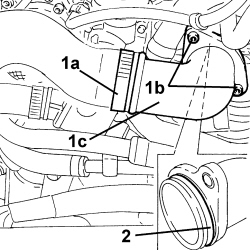
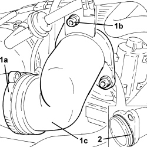
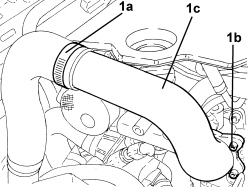

1048B27 RIGID PIPE FOR AIR INLET TO THROTTLE BODY - R R
- Path
- Procedures > 10 ENGINE > 1048 ENGINE AIR SUPPLY CIRCUIT > 1048B PRESSURE AIR CIRCUIT > 1048B27 RIGID PIPE FOR AIR INLET TO THROTTLE BODY - R R
- Kind
- repair procedure (removal / refitting; the operation number is the code)
- Applies to
- engines: 1.9 JTD 8v, 1.9 JTD 16v, 2.4 JTD 20v; all production periods
- Interactive page
- https://sloeber94.github.io/elrnDB-fCrm/en/#/194002170
Applies to: engines: 1.9 JTD 16v; all production periods
 Removing
Removing
 Refitting
RefittingOp. 5530B52 BATTERY SUPPORT/DRIP TRAY - R.R
1. Loosen the band (1a), undo the bolts (1b) and remove the throttle casing rigid air inlet pipe (1c).
2. Remove the O-ring.

Applies to: engines: 1.9 JTD 16v; all production periods
Refitting
Removing- Place the throttle casing rigid air inlet pipe back in its housing complete with O-ring and secure it using the bolts and the band.
Applies to: engines: 1.9 JTD 8v; all production periods
Removing
RefittingOp. 5530B52 BATTERY SUPPORT/DRIP TRAY - R.R
1. Loosen the band (1a), undo the bolts (1b) and remove the throttle casing rigid air inlet pipe (1c).
2. Remove the O-ring.

Applies to: engines: 1.9 JTD 8v; all production periods
Refitting
Removing- Place the throttle casing rigid air inlet pipe back in its housing complete with O-ring and secure it using the bolts and the band.
Applies to: engines: 1.9 JTD 16v, 2.4 JTD 20v; all production periods
Removing
RefittingOp. 5530B52 BATTERY SUPPORT/DRIP TRAY - R.R
1. Loosen the band (1a), undo the bolts (1b) and remove the throttle casing rigid air inlet pipe (1c).

Applies to: engines: 1.9 JTD 16v, 2.4 JTD 20v; all production periods
Refitting
Removing- Place the throttle casing rigid air inlet pipe in position and secure it using the bolts and the band.
Topics linked from this page (2)
Topics that link to this page (10)
- 1060F10 FUEL INJECTORS - R.R.
- 1060F20 PIPE FROM PRESSURE PUMP TO FUEL MANIFOLD - R.R.
- 1060F30 SINGLE FUEL MANIFOLD PIPE - R.R.
- 1060F36 PIPES (ALL) FROM FUEL MANIFOLD TO INJECTOR - R.R.
- 1060F51 FUEL HOSE FROM SINGLE MANIFOLD INJECTOR TO RETURN MANIFOLD - R.R.
- 1060G28 FUEL PRESSURE SENSOR ON FUEL MANIFOLD TO INJECTORS - R.R
- 1060G31 FUEL PRESSURE REGULATOR ON SINGLE MANIFOLD TO INJECTORS - R R
- 1072B10 INLET MANIFOLD - R + R AND REPLACE SEAL
- 1080C24 E.G.R. SYSTEM SOLENOID - R + R
- 3330D30 VACUUM PUMP - R+R